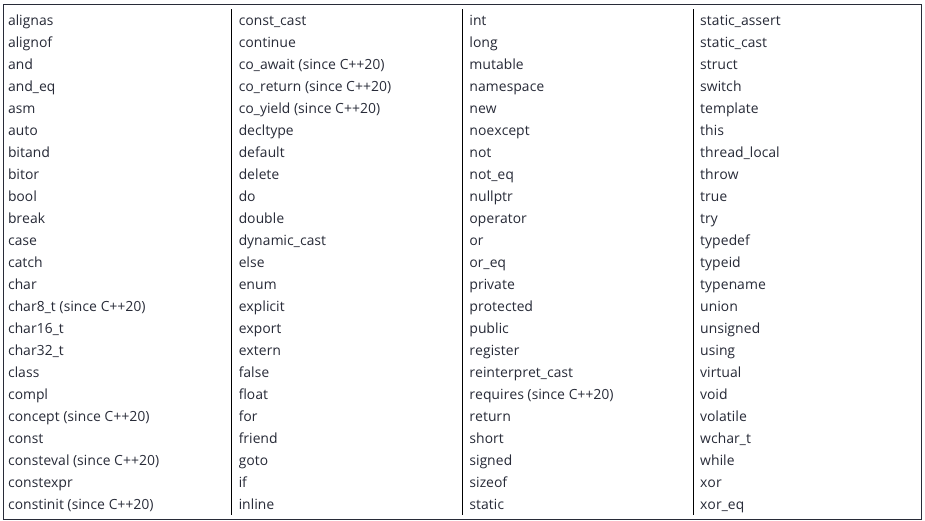
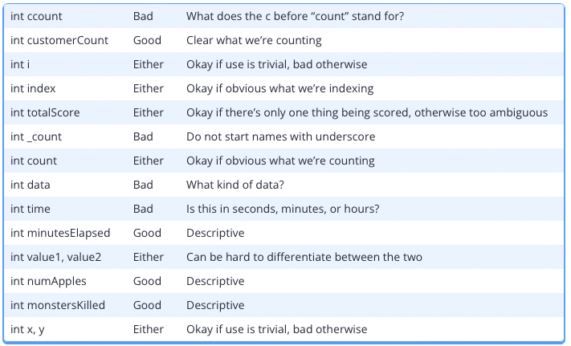

关键字#
C++ 预留了 92 个词自用(对于 C++20 而言) 。这些词称为关键字(或保留字)，每个关键字在C++中都有其特定的含义。
下表列举了 C++ 20 中的全部关键字：

关键字后有标识 C++20 的，属于 C++20 新增的关键字。如果你的编译器不支持 C++ 20（或者其具备 C++20 功能但默认是关闭的），这些关键字将不具备实际用途。
C++ 还定义了一些特殊的标识符：override、final、import 和 module。这些标识符在特定上下文中具有特殊的含义，但它们并不是C++保留字。
你已经接触过其中的一些关键字，包括 int 和 return。这些关键字、标识符以及一组运算符就构成了 C++ 语言的全部（预处理器指令除外）。由于关键字和特殊的标识符具有特殊含义，因此你的 IDE 通常会将其标记为不同的颜色以使其更加醒目。
在完成了本教程的学习后，你会理解上述关键字中几乎全部的功能！
命名规则#
提醒一下，变量（或函数、类型以及其他任何元素）的名称都称为标识符。C++ 允许你灵活地选择标识符。不过，在选择命名标识符时，你需要遵循以下规则：
- 标识符不能是关键字，关键字是语言的保留字；
- 标识符只能使用大小写字母、数字和下划线。也就是说，标识符中不能包含符号（除了下划线）或者空白符（空格或制表符）；
- 标识符必须以字母（大小写均可）或下划线开头，不能够以数字开头；
- C++ 是大小写敏感的，因此它会区分大小写字母。
nvalue和nValue是不同的，和NVALUE也不同，
命名最佳实践#
现在，想必你已经知道如何为变量命名了，接下来让我们聊聊，你应该如何为变量（或函数）命名。
首先，C++ 中约定俗成的是，变量名应该以小写字母开头。如果变量名是一个单词，则整个单词都应该使用小写字母。
int value; // correct
int Value; // incorrect (should start with lower case letter)
int VALUE; // incorrect (should start with lower case letter)
int VaLuE; // incorrect (see your psychiatrist) ;)大多数情况下，函数名同样也是小写字母开头的（尽管在这一点上有很多不同意见）。我们会遵循这一惯例，因为main函数就是小写字母开头的（而且main函数是任何程序都需要有的）。此外，C++标准库中的所有函数也都遵循这一原则。
大写字母开头的命名标识符通常用于命名用户定义的类型（例如结构体、类和枚举，稍后我们会介绍这些类型）。
如果变量名或函数名由多个单词组成，常见的命名惯例有两种，一种是使用下划线分割单词，称为蛇形命名法(snake case)，另外一种是使用大小写间隔的方法（有时候称为驼峰命名法，因为大写字母比较突出，就像骆驼的驼峰一样）。
int my_variable_name; // correct (separated by underscores/snake_case)
int my_function_name(); // correct (separated by underscores/snake_case)
int myVariableName; // correct (intercapped/CamelCase)
int myFunctionName(); // correct (intercapped/CamelCase)
int my variable name; // invalid (whitespace not allowed)
int my function name(); // invalid (whitespace not allowed)
int MyVariableName; // valid but incorrect (should start with lower case letter)
int MyFunctionName(); // valid but incorrect (should start with lower case letter)在本教程中，我们通常会使用驼峰命名法，因为它可读性更好（对于蛇形命名法来说，有时下划线容易和空格混淆）。但是，这两种方法都很常见，C++ 的标准库在命名变量和函数的时候，使用的就是基于下划线的蛇形命名法。有时候，你甚至会遇到混用两种命名法的情况，蛇形命名法用于变量名而驼峰命名法则用于函数名。
如果你的工作是在其他人的代码上进行开发，那么这些就不重要了。因为这种情况下，最好的做法是遵循他人的命名规则而不是死板的遵循上述原则。
其次，命名时应当避免以下划线开头，下划线开头的名称常常被操作系统、库或编译器预留使用。
第三，命名应当能够表明该变量存储数据的含义（尤其是当计量单位不明显的时候）。变量名应该能够帮助其他对你代码不甚了解的开发者快速理解其用途。甚至，当你在三个月之后再看自己的代码的时候，你都有可能看不懂自己的代码，那时候你就会庆幸自己起了易于理解、含义清晰的变量名。
不过，为一些无关紧要的变量取一个过分复杂的名称反倒有碍于理解，其危害不亚于给重要的变量取一个意义模糊的名字。因此，命名的一个原则可以是，让变量名的长度符合其被使用的频度。无关紧要的变量名应该使用更短的变量名（例如 i）。被广泛使用的变量（例如某个在多处被调用的函数）则值得拥有一个更长、更具解释性的变量名（例如，openFileOnDisk 会比 open 更合适）。

在任何情况下，都应该避免使用缩写。尽管使用缩写可以稍微提高你敲代码的速度，它会导致你的代码难以被理解。既是有些缩写具有明确的含义，但读者在遇到它的时候仍然需要花些时间来搞清楚它的含义。代码被阅读的时间远长于它被编写的时间，你在写代码上节省下了的时间，将来都会浪费在其他阅读者（甚至是你自己）的身上。如果你希望加快编写代码的速度，请使用编辑器的自动补全功能。
最后，清晰明确的注释也大有助益。例如，变量 numberOfChars 用于存放一个字符串中的字符的个数。但是，字符串“Hello World!”中究竟包含几个字符呢？10个，11个还是12个？这取决于你是否考虑空格和标点符号。但是，将该变量命名为numberOfCharsIncludingWhitespaceAndPunctuation 就太长了，最好的方式是在定义变量时使用注释的方式帮助读者去理解。
// holds number of chars in a piece of text -- including whitespace and punctuation!
int numberOfChars;